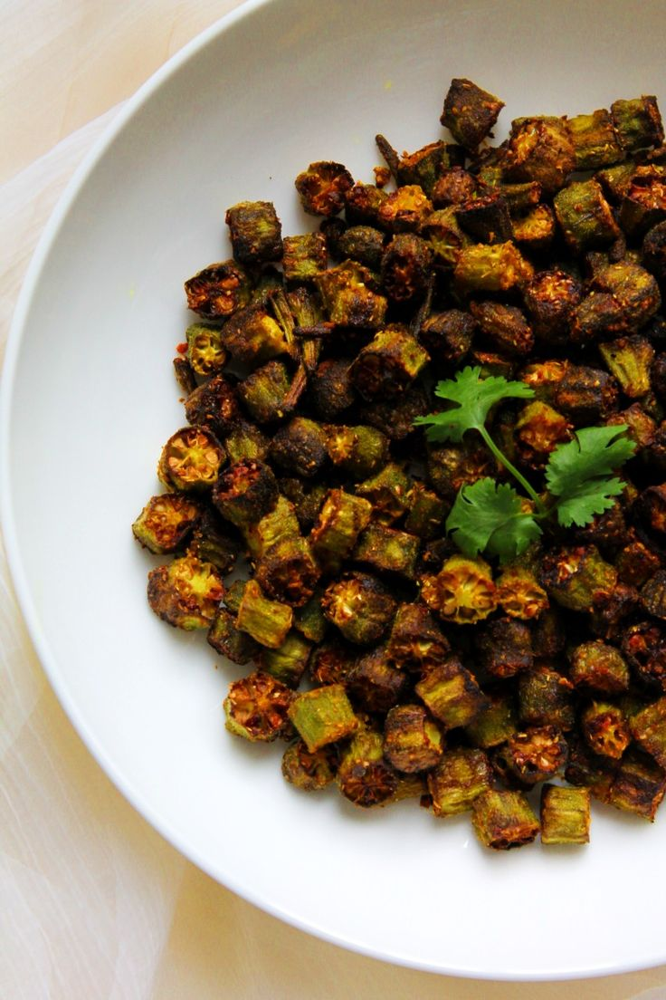

Okra Fry

Description
The okra is a delicacy in many regions of central asia and the Middle east.
(info is based on people's preferences who are from those places). It is hailed
as the queen of vegetables and has numerous nutritional values. A single good
serving can fill you up! Such is the power of Okra. It is easy to cook, but it
needs some amount of preparation. Even if you are a complete beginner, you can
attempt to cook okra and succeed with a high probability of success. Like many
other traditional dishes, Okra can also be cooked in multiple ways. The current
one is the way of frying.
The cooking method is almost similar to some other Fry dishes that are on the,
website, but it's taste and delicacy is unparalleled. It has high fibre content
which is good for the gut health. With okra, one needs to choose the ingredients
carefully as to not ruin the taste of the final dish. One also needs to pay
attention to the preparation of okra to avoid it's inherent stickiness. Let's dive
into the dish without any further ado!
Ingredients
- Fresh, Young Okra (500g, 1kg, 2kg, whatever you need)
- Oil (olive, rapeseed, sesame, vegetable, as per your preference)
- A Frying pan
- A Spatula
- Salt
- A hob or a cooking stove
- chillies or peppers of your choice based on your spice tolerance
- Turmeric powder
- Cumin seeds/powder
- Black Mustard Seeds
- Peanuts & Cashews (only if you are not allergic to any)
Steps
- Firstly, select young and fresh okra. Don't select close to ripe okra
- Wash them thoroughly with salt water and then clean each okra such that no water is left out
- Cut them into small pieces and keep the cut okra ready
- Put your frying pan on the hob or the stove and set the hob's power to 6 and stove to medium High
- Wait 3-4 mins for the pan to get heated, before adding the oil of your choice to the pan
- Wait for another 3-4 mins for the oil to heat up and then add the okra pieces to the pan
- Put a lid on the pan and wait for 10 mins
- Open the lid and mix the okra from top to bottom and add turmeric, cumin, and blackmustard seeds. After addition mix the curry thoroughly to ensure even spread of the new ingredients
- Wait for 4-5 mins before adding salt and peppers of your choice to the fray. Mix thoroughly again/li>
- Now, after another 4-5 mins, add peanuts and cashews. They add to the rich flavour of the Okra
- Wait for a couple more minutes, check a piece of okra and taste it to see any shortcomings. If any add the missing component, else it's ready to be served hot.
Tips
- Okra tastes good when one of the components, itself or the one it's being eaten with is hot
- It can also be eaten with wide variety of sides and stuff.
Savour the dish!
Home